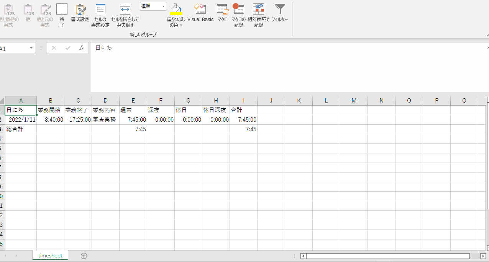

自己紹介

筑後 圭太
18歳で上京し、某IT企業に派遣社員として配属。主にExcelを使用した業務の中で、独学で学んだVBAでツールを作成し活用してきました。そのことからITに興味が湧き、Javaを始めとしたIT技術の独学をほぼ0からスタート。現在はJava Silver取得に向け勉強中です。趣味は将棋で、過去にアマチュア二段を御徒町将棋センターで認定されましたが、現在はめっきり落ちぶれてしまい1級あるかも怪しいです。将棋の練習でもプログラミングの勉強でもコツコツと努力するのが好きです。
- 2017年4月 上京
- 2017年5月 株式会社日本ベストサポート 入社
- 2017年6月 某IT企業 登録
- 2020年6月 テレワークを通じてVBAの独学を開始
- 2020年12月 Javaの独学を開始
- 2021年2月 Javaの独学に合わせてSQLの独学を開始
- 2021年8月 Servlet/JSPの独学を開始
制作物


- 